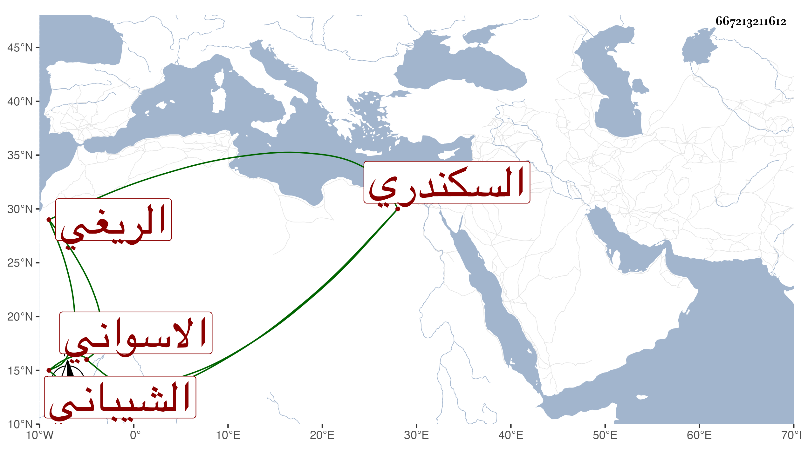

0902Sakhawi.DawLamic.ITO20230111-ara1.EIS1600.667213211612
Biography ID: 667213211612
627
فاطمة ابنة محمد بن أحمد بن أبي بكر بن عرام بن إبراهيم بن ياسين بن أبي القسم بن محمد بن إسماعيل بن علي أم الحسن ابنة الامام تقي الدين الريغي الشيباني الاسواني الأصل السكندري سمعت في سنة ست وخمسين وسبعمائة من الجمال محمد بن أحمد بن هبة الله بن البوري البعض من اول الترمذي وذكرها التقي بن فهد في معجمه .
